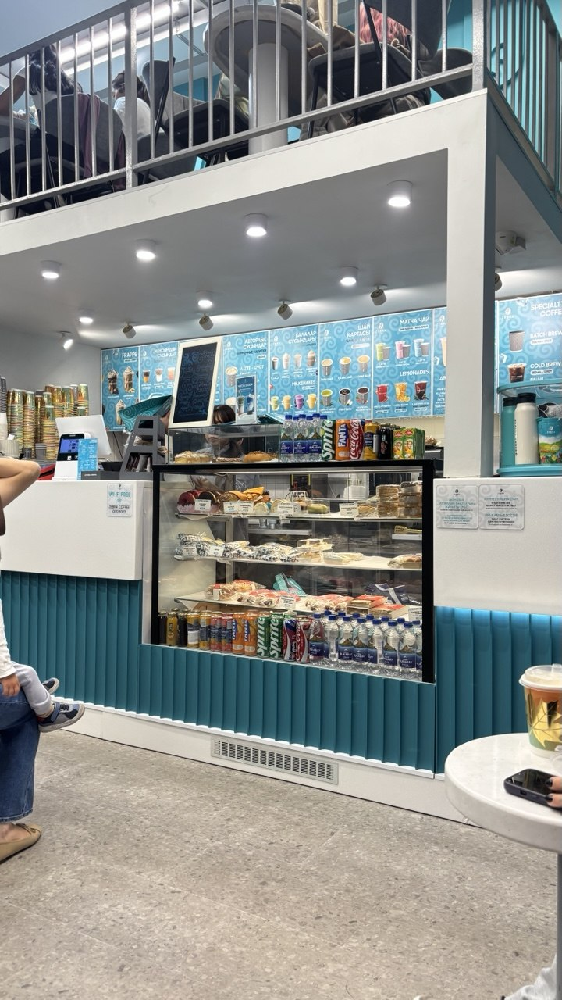

Find Us in the Heart of the City
We are always happy to welcome you at Zebra Coffee! Whether you need a quick takeaway espresso, a cozy table for reading, or a quiet spot to work on your laptop, our doors are open for you at any time. Stop by for fresh pastries and rich brews prepared by our friendly baristas.
Contact Details & Address
Zebra CoffeeMangilik El Avenue 38, Astana, Kazakhstan
Phone: +7 747 029 00 43
Email: info@zebracoffee.kz
Find us on the interactive map: View Zebra Coffee on 2GIS.
General Information
- Service Format
- 24/7 non-stop service with fresh coffee, desserts, and quiet workspace.
Current Store Status: Open 24/7
Working Hours
| Day | Opening Time | Closing Time |
|---|---|---|
| Monday – Sunday | Open 24 Hours | Open 24 Hours |
Our Coffee Shop Corner
